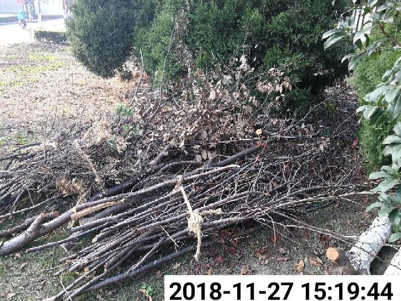

太湖新城
太湖新城(地图样式一)
吴江开发区(地图样式二)
吴江高新区(地图样式三)
汾湖高新区(地图样式四)
七都镇(地图样式五)
震泽镇
平望镇
桃源镇
299
今日受理
290
今日结案
210
巡查上报
90
市民服务
案件实时跟踪
市

市容环境-暴露垃圾
有暴露垃圾,请处理
发现
朱冰梅
09:51:37
市
市容环境-暴露垃圾
有暴露垃圾,请处理
发现
朱冰梅
09:51:37
市
市容环境-暴露垃圾
有暴露垃圾,请处理
发现
朱冰梅
09:51:37
市
市容环境-暴露垃圾
有暴露垃圾,请处理
发现
朱冰梅
09:51:37
案件热点类型
事部件
热线
1,551,706
案件受理量
312,661
巡查上报
278,210
市民服务
区指挥中心
显示区域网格
显示右侧及底部数据